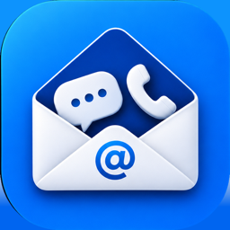

MailMySMSMailMySMS connects directly to your own email account over IMAP and writes your messages and call history there. No backup cloud to sign up for. Just your phone and your mailbox.
Your messages and call history are personal. Backing them up shouldn’t mean handing them over to yet another service or trusting an unfamiliar server with your data.
MailMySMS takes a simpler approach. It connects directly to your own email account and saves your messages and call history there over IMAP. No intermediary backup servers, no separate cloud account to sign up for. Just your phone and your mailbox.
It started as a personal itch — a simple way to keep SMS and call history safely archived in my own inbox. One thing led to another, and now it can back up years of messages, export them locally, and handle RCS messages where Android makes them accessible.
The idea remains the same: your phone, your mailbox, nothing in between.
MailMySMS is open source, so anyone can inspect the code, understand how it works, and help make it better.
Built and maintained by one person in spare time, mostly out of curiosity and the joy of making useful little things.
Live SMS, MMS, and call-log forwarding to your inbox as things happen · one-time bulk backup of years of existing history · RCS messages where your phone's own messaging app stores them alongside SMS/MMS · local XML/CSV exports saved only to your device · no analytics, no ads, no account to create.
Found a bug, have an idea, or just want to say hi? Genuine feedback — good or bad — genuinely helps. Reach out via GitHub Issues or email.
If MailMySMS makes your life a little easier, you can always fuel the next round of tinkering with a coffee.